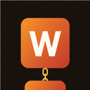

CONNECT THE WORDS,
BEAT THE CLOCK.
- Each word makes a common phrase with the one above it:
- The first letter of every word is revealed for free.
- A new letter every 15 seconds, but each one is a strike.
- Solve with the fewest strikes possible!
You solved today's WordFlow.